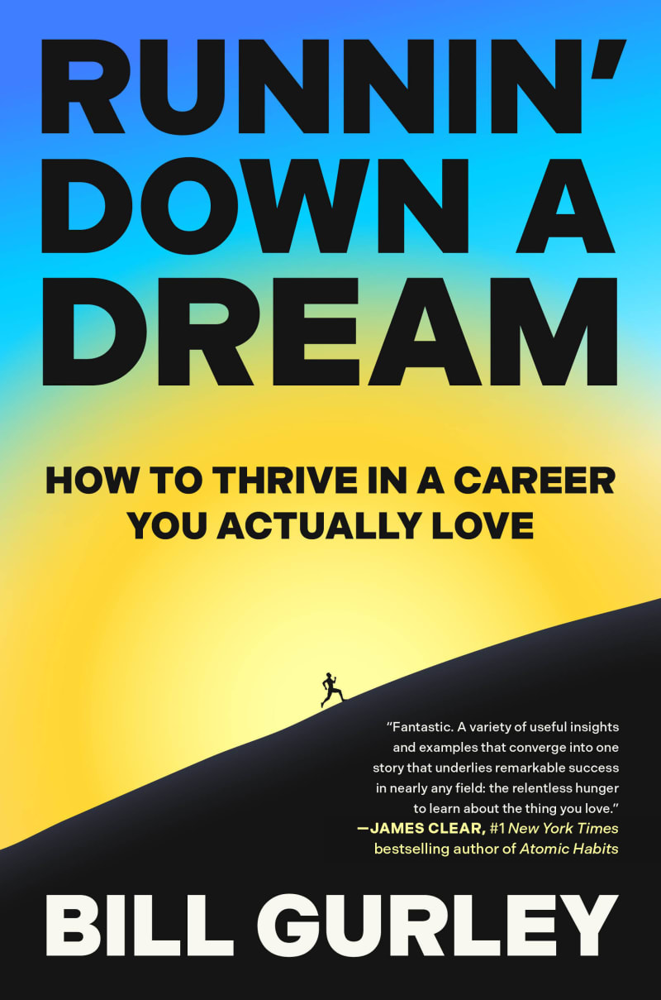

比尔·格利（Bill Gurley）在硅谷风险投资界以"过人的身高与过人的眼光"著称——他身高六英尺九英寸，更以精准识别时代机遇闻名。他在得克萨斯州休斯敦郊区长大，先后就读于佛罗里达大学与得克萨斯大学，毕业后辗转从事芯片技术营销、华尔街卖方研究，再到风险投资，职业轨迹横跨多个领域。1999年他加入Benchmark资本，此后主导了对Uber、Zillow、OpenTable、Grubhub等公司的早期投资，其中仅Benchmark在Uber的一千一百万美元投资便带来了数十亿美元的回报。2026年出版的《追梦之路》并非一本传统的商业成功学，而是格利历经数十年的职业积累与访谈研究，试图回答一个比"如何赚钱"更根本的问题：一个人如何才能在真正热爱的事业中持续成长？
全书提炼出六条可供复制的核心原则。第一，以近乎痴迷的好奇心追随真正令你兴奋的领域，而非追随薪酬或声望。第二，像工匠打磨技艺一样持续精进，专业能力是吸引机会的根本。第三，主动寻找真正愿意投入时间指导你的导师，这种关系无法被在线课程取代。第四，珍视与你同频共进的同伴圈子，卓越往往是一种群体现象。第五，"去有行动的地方"——格利用自己从休斯敦到纽约再到硅谷的经历，说明地理与环境的选择本身就是战略。第六，始终保持回馈精神，在职业上升期即开始帮助他人。书中穿插了经纪人洛里·巴特利特、餐厅主理人丹尼·迈耶（Danny Meyer）、体育高管萨姆·辛基（Sam Hinkie）等各行业顶尖人物的亲历故事，用真实的曲折轨迹代替了鸡汤式的线性叙事。
该书出版后迅速登上《纽约时报》畅销书榜。风险投资人、播客主持人蒂姆·费里斯（Tim Ferriss）在自己的博客中盛赞此书，并专门转载了一章内容，称它"将模糊的职业建议替换成了真实可重复的系统，击碎了'有意义的工作是少数幸运儿专属'的神话"。格利在2025年底接受费里斯采访时谈到写作动机："我见过太多人在技术上取得成功，却对自己的职业生涯深感遗憾。这本书试图找出这种遗憾的根源，并给出可操作的解药。"书名借用了汤姆·佩蒂（Tom Petty）的经典摇滚歌曲，也暗合格利本人在书中反复强调的一个观点：对梦想的追逐不是一蹴而就的冲刺，而是需要毅力与热情共同驱动的长途奔跑。
对于关注创业与投资的读者而言，《追梦之路》的价值在于它把格利数十年的一手观察与二手验证融为一体。格利亲眼见证了创始人如何在热情与专业能力的双重驱动下建立起改变行业的公司，也目睹了那些仅凭精打细算却缺乏内在动力的人如何在关键时刻做出错误的取舍。书中的六条原则并非只适用于刚踏入社会的年轻人——对于面临职业转型的创业者、寻找下一个赛道的投资人，同样具有直接的参考价值。格利用自己从工程师到分析师再到投资人的亲身经历说明：职业并不是一条预设好的轨道，而是一系列由好奇心驱动的选择共同铺就的路径。